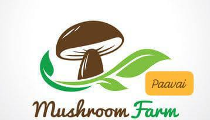
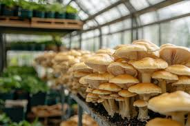
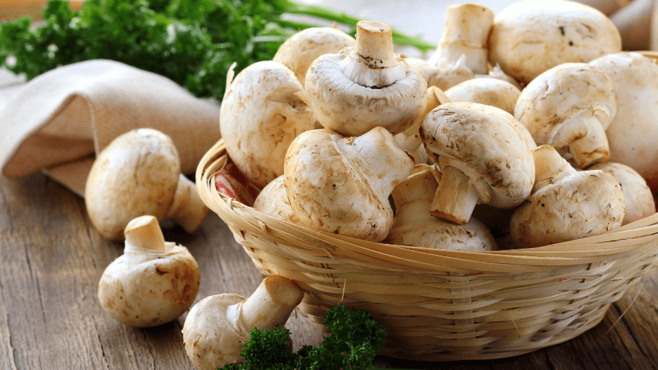
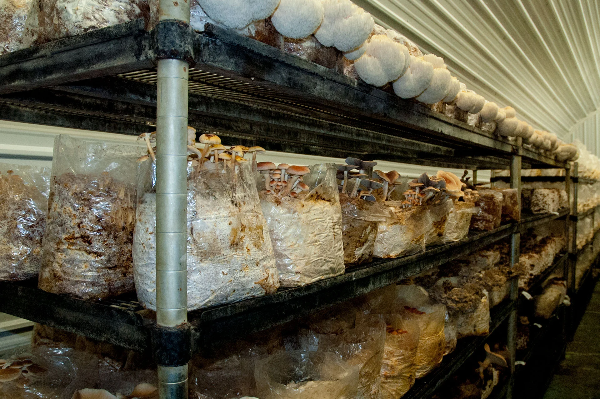
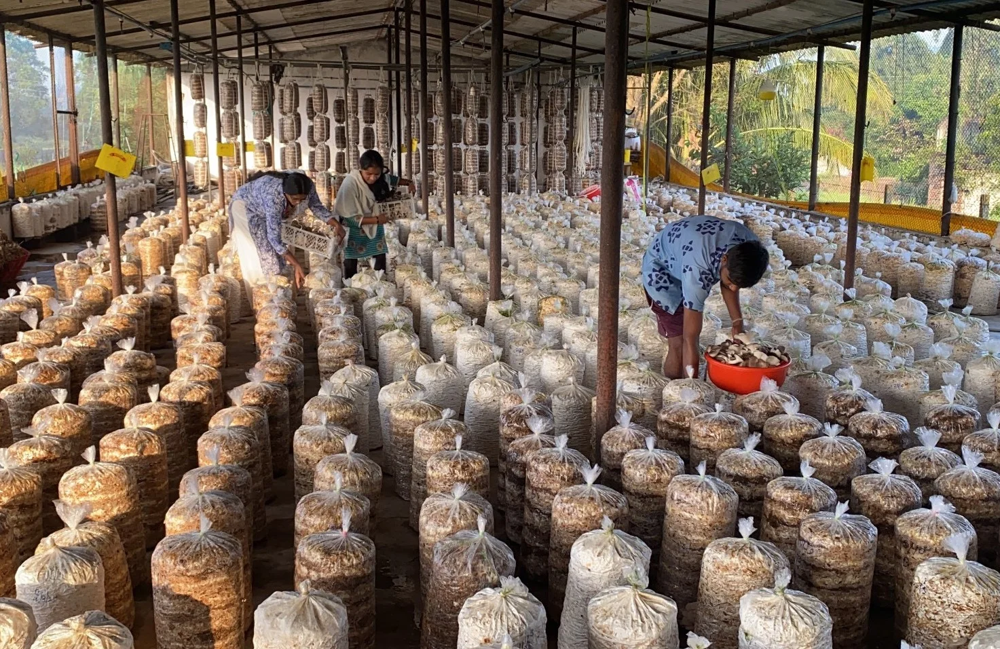
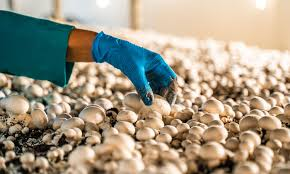
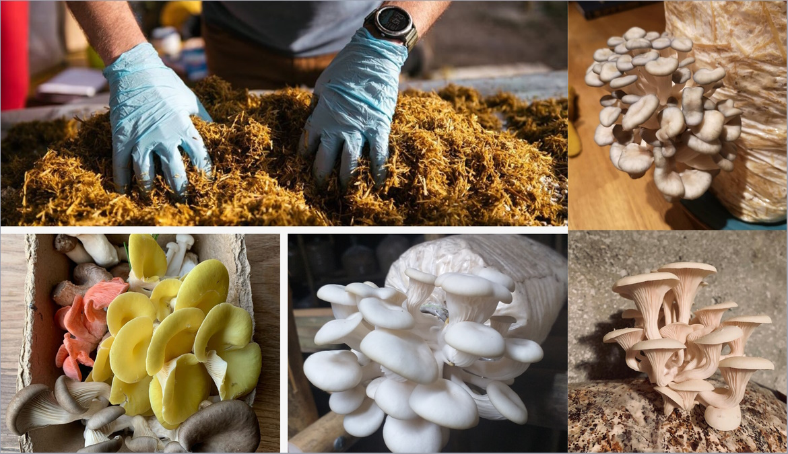
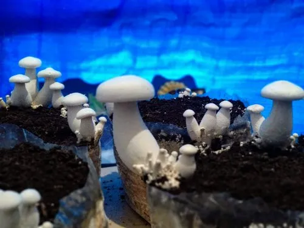

PAAVAI MUSHROOM FARMEmpowering Women • Cultivating Freshness • Sustaining Nature





We carefully harvest our mushrooms ensuring freshness and maximum nutrition for our consumers.

We use organic and sustainable methods to clean and process mushrooms without harming their nutrients.

Every mushroom is carefully packed to preserve its freshness and quality, ensuring it reaches you in perfect condition.